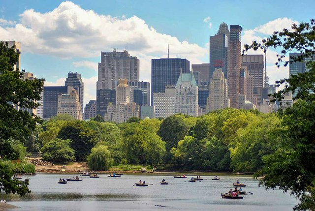
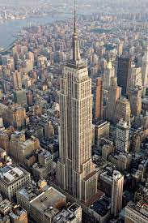

Geographical Location: New York, United States of America
New York City, otherwise known as “The Big Apple,” is a bustling city in the United States of America. Home to about 8 million people, New York City houses
popular attractions such as the statue of liberty, central park, the empire state building, and many more.
You can find the original gif at Giphy
There are 5 boroughs within New York City, including Brooklyn, Manhattan, Staten Island, Queens, Bronx. Each borough is filled with different sights to see. New York City has
many opportunities not only for those who live there, but also those visiting. From navigating the subway system
to seeing a Broadway show, it is impossible to get bored. You can find the original image of the Brooklyn bridge at Investopedia
Photo Gallery
A suspension bridge connecting Manhattan and Brooklyn. Although closed from the inside, this uniquely built man-made structure is worth a photo stop. You can find the original image of the Vessel at Trip advisor

A park near the Upper West and East Side spanning 843 acres, with activities ranging from ice skating to pickleball. You can find the original image of Central Park at CentralPark.comBe sure to see the most famous attraction in New York City - the Statue of Liberty. You can find the original image of the Statue of Liberty at Kids.NationalGeographic.com

If you can stomach heights, be sure to check out the view from the top of the empire state building! You can find the original image of the Empire State Building on Wikipedia
Likes
Statue of Liberty
Empire State building
The Vessel
Switzerland (Swiss Alps)
The Swiss Alps cover 64% of Switzerland’s surface, while Switzerland only covers about 15% of the Alps’ surface area. Regardless, Switzerland is the country that is most commonly associated with the Alps. The highest point in these Alps accessible by cable car is the Matterhorn.
However, the highest summit of these Alps is the Monte Rosa, located on the Swiss-Italian border, but the highest mountain is Dom, entirely within Switzerland. The most popular activity that takes place in the Swiss Alps is hiking. Almost 23,000 kilometers of hiking trails are accessible to the public in Switzerland’s mountainous areas.
Photo Gallery
Located at the base of the majestic Matterhorn, the beauty and bounty of Zermatt are rivaled by few. The slopes serve up impeccable skiing conditions 365 days a year. And it’s one of only two locations in the world to boast such a statistic. Its world-class lift system, endless terrain, and activities off the slopes are just a few reasons many consider Zermatt the best ski destination in Europe, possibly the world.The Swiss Summer shouldn’t be slept on. There are many activities to take part in other than skiing such as hiking and wine tasting. The Alpine waters are also good for swimming this time of year.South of Bern and Luzern, and east of Lake Geneva, lies the grand Alpine heart of Switzerland, a massively impressive region of classic Swiss scenery – high peaks, sheer valleys and cool lakes – that makes for great summer hiking and world-class winter sports."There are many beautiful towns in the Swiss Alps. The photographer started in Interlachen and ended in Lauterbrunnen, a town known for its hiking trails in the alps.""You’ll get great views on alpine railways. Switzerland’s Gotthard tunnel, connecting rail traffic from Milan to Zurich, is temporarily closed. Trains are being rerouted to the “Panorama route” offering much better views of the Swiss Alps for an hour longer."